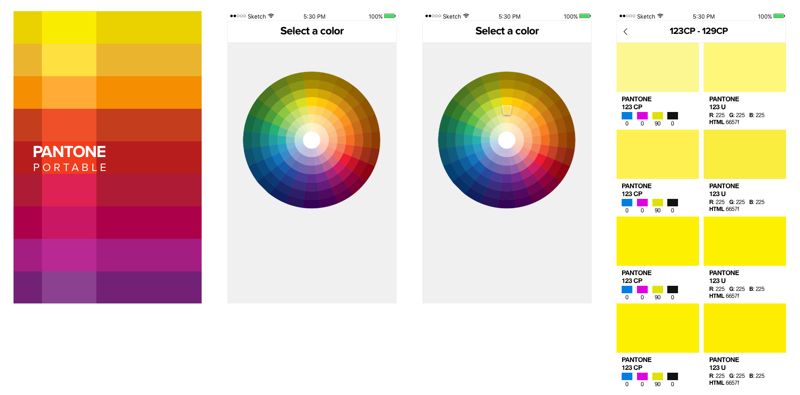

The concept came from wanting to view a Pantone booklet without having an actual booklet. My natural thought process led me to believe an app was the best solution to problem because its on a phone, making it portable and easily accessible.
I wanted to make the experience as close to the real thing as I could. I wanted to mimic the way you are able to pick through pages in the booklet until you find the perfect color.
Color gradient palettes are commonly used in Pantone related things. An example of this is their Pantone app logo and book written about Pantone colors.
I initially played around with the brightness gradient but decided to freshen up the look without it straying too far from the original branding by creating a hue gradient.
Since this was the first version, I wanted to keep the interface as simple of possible. My initial approach behind the way users would select a color was that they would be given a list of basic colors: red, orange, yellow, green, blue, purple, brown, and black and they would select from that list. Once they chose a color, a swatch page could display where they could swipe through and see all colors in that color family.The problem with this approach was that it doesn’t allow the user to quickly access a variation of a color. Say someone is looking for a mustard, not just yellow, they would have to do a lot of scrolling to get there.
My second approach was displaying a color wheel, which gave the user more available brightness and hues of each color to chose from initially.
I wanted this part of the experience to be as consistent as possible with Pantone booklet. I created a nearly identical interface and allowed the user to swipe through each page similar to how one can pick through pages in the booklets.
Here is the final app icon.
And the final interaction flow of the app..
